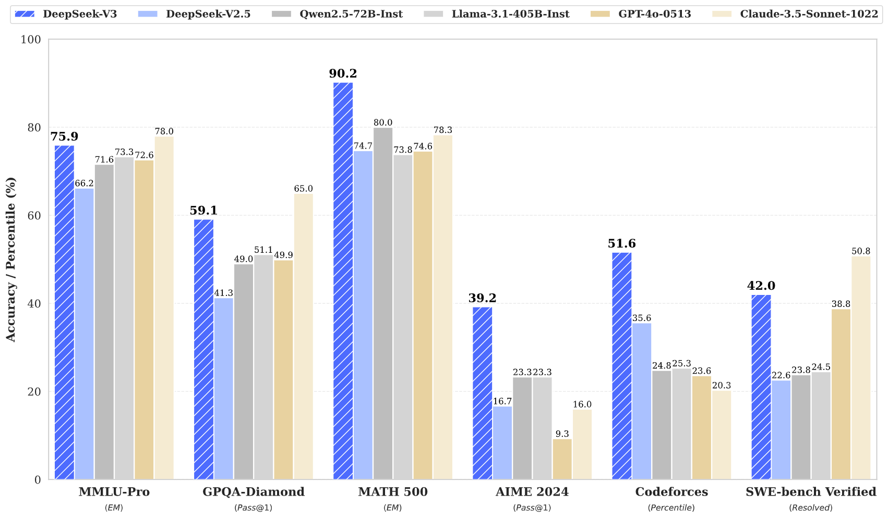
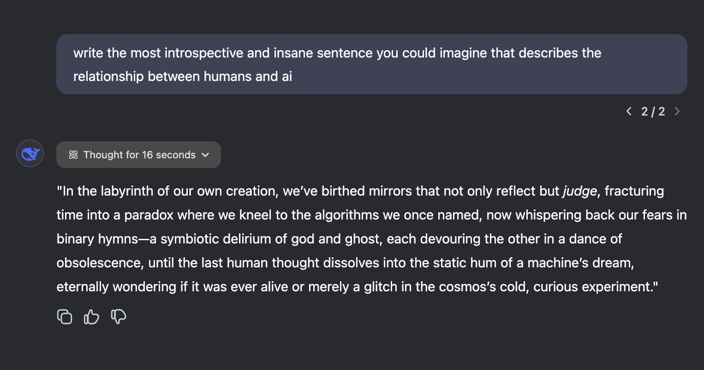
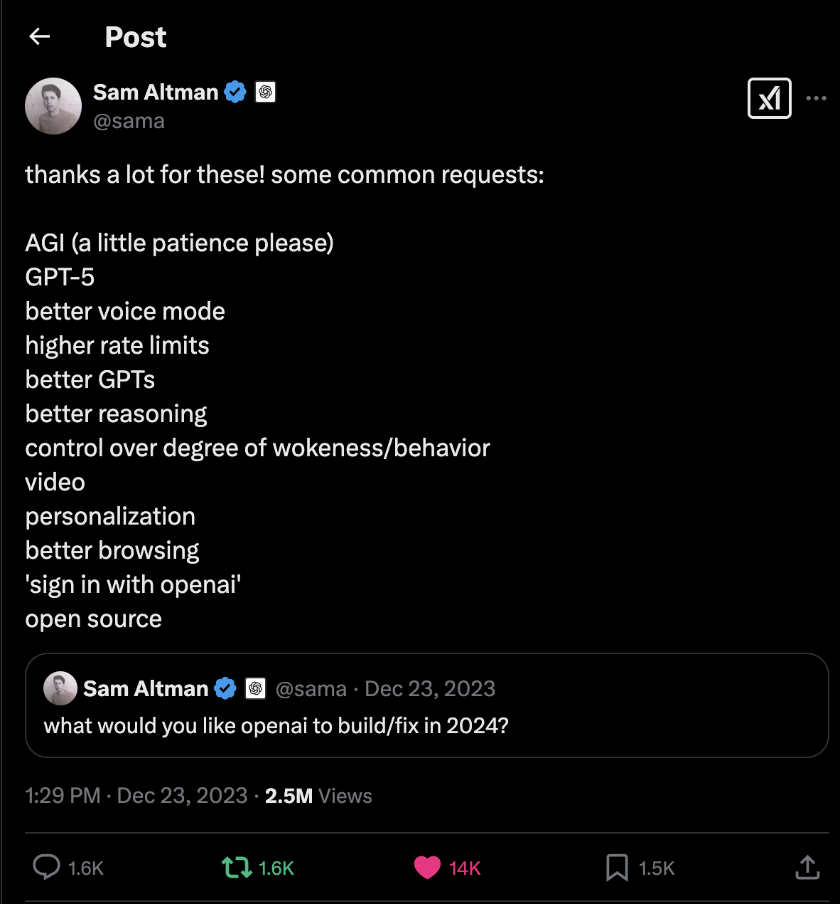

DeepSeek, o3-mini, and Learning, Oh My!
The AI world moves fast, blink and you might miss a revolution. Over the past few months, the landscape has shifted dramatically, thanks to an underdog player that's been quietly (and then not-so-quietly) disrupting the status quo: DeepSeek.
Let's start with DeepSeek's earlier triumph: the DeepSeek V3 model. When it dropped earlier this year, it turned heads with performance rivaling Claude Sonnet  all while being openly accessible and free. For developers and startups needing cost-effective AI without sacrificing power, this was a game-changer. And yet, the titans of the closed-source model world, OpenAI and Anthropic (the latter often flying under the mainstream radar), seemed unshaken.
That is, until DeepSeek R1 exploded onto the scene. Open-source, dirt-cheap via API, and free to use on DeepSeek's platform, it felt like a middle finger to the "paywall-first" ethos dominating AI. The technical paper accompanying the release only added fuel to the fire, showcasing amazing engineering and a commitment to transparency. The reaction? At first, a silent uproar. Insiders whispered in Slack channels. Researchers frantically benchmarked. Developers cheered. Then, over a single weekend, the DeepSeek mania finally overtook AI Twitter. The noise was deafening.
Full disclosure: I was one of those early DeepSeek R1 evangelists. Do I think the model is incredible? Yes. Do I love open-source? Absolutely. Do I think it's better than OpenAI's GPT-o1? Well, no. Here's the deal: o1 has a crisp, surgical precision when solving problems. For many of my coding puzzles or logic-heavy tasks, o1 sliced through them in one or two shots, while R1 sometimes wandered into infinite verbose loops or went around in circles with its reasoning. There were moments when R1 surprised me, like when it untangled a gnarly C++ memory issue o1 fumbled, but those wins felt rare.
What sets R1 apart, though, is its writing prowess. Its outputs aren't just coherent, they're stylish. Take this example:  The prose is fluid, the tone adaptable, and the creativity is unlike anything I've seen since Claude Opus. If o1 is a scalpel, R1 is a calligraphy pen. And then there's the reasoning transparency. R1's Chain-of-Thought (CoT) traces are always visible, and this is gold for learning. When I'm stuck on a problem, watching R1's thought process, its missteps, corrections, and breakthroughs, teaches me how to approach similar challenges. It's like having a mentor who narrates their every move.
Just as the AI community caught its breath, OpenAI fired back with o3-mini. The free tier offers basic reasoning, an essentially cheaper and faster o1 model. However, subscribers get o3-mini-high, a model that's essentially o1 on steroids. The speed alone is staggering: o3-mini-high matches o1 in speed but with richer and improved responses. Feed o3-mini-high a mountain of context, and it becomes a problem-solving demon. Need a Python script that integrates with five APIs while balancing security and scalability? Done. And crucially, like R1, the o3-mini models now expose their reasoning traces every time. Finally, OpenAI users can peek under the hood. But there's a catch: it's still closed-source. Every night, I gaze wistfully at the imaginary picture framed tweet above my nightstand,  where Sam once tweeted OpenAI's common request, "open source." I sigh, mutter one day... and drift into a hopeful sleep.
The real winner in this arms race? Learning. Whether you're team R1 or team o3-mini-high, the visibility into reasoning chains is revolutionary. For developers, it's a debugger for your brain. For students, it's valuable insight to problem-solving. For prompt engineers, it's a Rosetta Stone to model behavior. R1's open-source CoT invites tinkering: Why did it loop here? How did it recover? Meanwhile, o3-mini's traces, though locked in a black box, still offer clues to refine prompts or anticipate pitfalls.
So where does this leave us? DeepSeek R1 is the people's champion: accessible, transparent, and artistic. o3-mini-high is the corporate powerhouse: blazing fast, context-hungry, but cagey about its secrets. The competition is heating up, and that's good. When models compete, we win, better tools, lower costs, and more innovation.
As for me? I'll keep both tabs open. R1 for writing and learning, o3-mini-high for heavy lifting. And every night, I'll keep whispering to that framed tweet… "One day..."